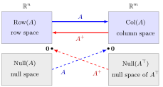

Condition (1) alone defines a generalized inverse, of which there are usually many. Condition (2) makes A in turn a generalized inverse of A+, and conditions (3) and (4) require the two products to be symmetric. Together they force AA+ and A+A to be orthogonal projections, which pins down a single matrix.

In the figure, A (blue) carries the row spaceRow(A) onto the column spaceCol(A) and sends Null(A) to 0. The Moore-Penrose inverse A+ (red) runs the other way: it undoes A from Col(A) back onto the row space and sends Null(A⊤) to 0. This is why AA+ projects onto Col(A) and A+A onto Row(A).
Geometrically, A+ inverts A where it can and sends the rest to zero: it maps Col(A) back onto the row space by undoing A, and maps Null(A⊤) to 0.
Two cautions. In general (AB)+=B+A+. And A+ does not depend continuously on A: for ε=0, diag(1,ε)+=diag(1,1/ε), which explodes as ε→0, while diag(1,0)+=diag(1,0).
A singular matrix. Let A=(1111)=2uu⊤ with u=21(1,1)⊤, so its only positive singular value is 2. Then
A+=21uu⊤=41(1111).
Check: A2=2A, so AA+=A+A=21A, which is symmetric, and AA+A=21A2=A, A+AA+=81A2=41A=A+. By contrast the generalized inverse G=(1000) gives AG=(1100), which is not symmetric, so condition (3) fails.
A single column. For a=(1,2)⊤ (full column rank), a+=(a⊤a)−1a⊤=51(1,2). For b=(1,1)⊤ the least-squares solution of ax=b is x=a+b=53.
Moore-Penrose InverseGeneralized InverseSingular Value DecompositionOrthogonal ProjectionSymmetric MatrixLeast SquaresFundamental Theorem of Linear AlgebraLeft and Right InversesIdempotent Matrix